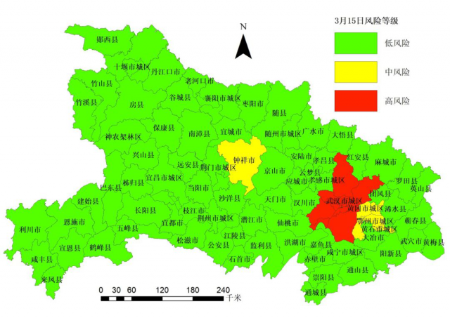

叶青武汉日记：像捐飞机一样捐救护车
原文链接 备份链接 6480 来源：正和岛 作者：叶青 03-04正在打榜，当前第1 1、武汉疑似病例降到234例 3日，全国新增确诊病例119例，新增死亡病例38例（湖北37例，内蒙古1例），新增疑似病例143例。截至3日，全国现有确诊 …
叶青武汉日记：武汉现有疑似病例1例
 5830
5830
来源：正和岛
作者：叶青
03-17正在打榜，当前第1

[
政事儿

新京报社 媒体
](https://archive.ph/o/LauCJ/mp.zhisland.com/wmp/user/personal/other/home?uid=6564053434834616323)
推荐人

1、武汉新增确诊病例1例
16日，周一，晴。16日，全国大陆地区新增确诊病例21例，新增死亡病例13例（湖北12例，陕西1例），新增疑似病例45例。截至16日，全国大陆现有确诊病例8976例（其中重症病例2830例），累计治愈出院病例68679例，累计死亡病例3226例，累计报告确诊病例80881例，现有疑似病例128例。湖北新增确诊病例1例（武汉1例），新增死亡病例12例（武汉11例），现有确诊病例8701例（武汉8304例），其中重症病例2782例（武汉2695例）。累计死亡病例3111例（武汉2480例），累计确诊病例67799例（武汉50004例）。新增疑似病例0例（武汉0例），现有疑似病例3例（武汉1例）。武汉的这些数据来之不易。截至欧洲中部时间16日10时（北京时间16日17时），中国以外新冠肺炎确诊病例较前一日增加13874例，达到86434例；中国以外死亡病例较前一日增加848例，达到3388例。确诊病例、死亡病例，都超过中国。由于欧洲多国报告的新冠肺炎确诊病例数持续攀升，世卫组织13日已宣布欧洲成为新冠肺炎疫情“震中”。
2、上海、北京、深圳要顶住
十天前，即国务院联防联控机制3月6日召开新闻发布会，国家卫生健康委新闻发言人米锋就表示，17例新增确诊病例中，16例为境外输入病例，提示这方面风险正逐步升高。“我们对疫情的警惕性和防控要求不能降低，还要继续深化疫情防控国际合作，及时与世卫组织和有关国家分享信息和经验，携手抗击疫情。”现在确实如此。16日，新增报告境外输入确诊病例20例（北京9例，上海3例，广东3例，浙江1例，山东1例，广西1例，云南1例，陕西1例）。可以说是遍地开花。截至16日，累计报告境外输入确诊病例143例。现在，回国并不是很顺利。比如，在11日，江苏发布《致从北京入境来(返)苏旅客告知书》，提出了具体要求。其中强调，拒不配合或故意隐瞒旅行史、相关病例接触史及病情情况，造成疫情扩散，危害公共安全的，将依法追究刑事责任。早在1月23日，新冠疫情在中国出现扩散势头之时，北京已启动小汤山的修缮改造工作。北京医疗机构的筛查与救治压力增大。距离北京首都国际机场约10公里的北京地坛医院首当其冲。自2月29日至3月14日，在救治本地确诊病例、疑似病例之外，该院累计接收机场转送的筛查人员973人，仅3月14日一天筛查207人。16日17时许，小汤山医院正式运营使用。从3月16日17时到24时，小汤山医院共接收来自机场待筛查人员35人，来自美国12人，英国9人，法国、韩国各3人，加拿大、奥地利各2人，瑞士、澳大利亚、菲律宾、阿联酋各1人。已有一位来自英国的女士确诊。
3、内容丰富的菜包
从2月24日开始，武汉推出“特价蔬菜包”惠民政策。截至3月15日，全市“特价蔬菜包”累计投放量已达240万余份。这些菜包，优先保障辖区孤寡老人、残疾人、特困户及新冠肺炎康复患者等特殊困难家庭需要。现在，进一步优化“特价蔬菜包”品种结构。“特价蔬菜包”选择品种由原来的“六选三”扩大到“十三选三”，并定期对品种进行更新，保持重量10斤售价10元不变。原“六选三”方案：从白萝卜、胡萝卜、土豆、大白菜、卷心菜、莴苣等6种蔬菜中选择3种以上品种。现“十三选三”方案：从土豆、白萝卜、胡萝卜、上海青、卷心菜、西芹、西红柿、黄瓜、冬瓜、生菜、油麦菜、大白菜、菠菜等13种蔬菜中选择3种以上品种。根据湖北最新评估报告：中风险市县降至4个，高风险市县只有1个。

为了打赢武汉保卫战，1月27日至3月14日，全国累计向湖北地区运送防疫物资和生活物资83.71万吨，运送电煤、燃油等生产物资143.7万吨。
4、全年的经济增长会如何？
16日，国家统计局公布了1-2月的经济数据。正好可以体验或者验证一下大家的感受。一是规模以上工业增加值同比下降13.5%。但是，医疗防护和生活所需物资增长较快，口罩、发酵酒精产量分别增长127.5%和15.6%，冻肉和方便面分别增长13.5%和11.4%。二是服务业生产指数同比下降13.0%。但是，金融业增长4.5%，信息传输、软件和信息技术服务业增长3.8%。大家都在用手机，在线上开会。三是社会消费品零售总额52130亿元，同比下降20.5%。按消费类型分，餐饮收入4194亿元，下降43.1%；商品零售47936亿元，下降17.6%。感同身受。但是，限额以上单位粮油、食品类，饮料类和中西药品类商品分别增长9.7%、3.1%和0.2%。这些是电商的主要内容。全国网上零售额13712亿元，同比下降3.0%。其中，实物商品网上零售额11233亿元，增长3.0%，占社会消费品零售总额的比重为21.5%，比上年同期提高5.0个百分点。服务肯定下降，服务人员不能上门。四是固定资产投资（不含农户）33323亿元，同比下降24.5%。分领域看，基础设施投资同比下降30.3%，制造业投资下降31.5%，房地产开发投资下降16.3%。五是2月份全国城镇调查失业率为6.2%，31个大城市城镇调查失业率为5.7%。这些数字，与一些行业的调查相吻合。中国烹饪协会发布的一份调查报告显示，疫情期间78%的餐饮企业没有任何营收。预计整个餐饮业的损失可能在2100多亿元左右。线下批发零售80%停止，1季度增速回落7-8个百分点。全国节后累计发送旅客量仅为去年春运同期的约六分之一，货运量增速也下降5-6个百分点。娱乐业加旅游业的损失可能在4500亿左右，同比下降近6成。房地产销售也减少了6成。所幸这只是由于全面管控所引起的暂时“休克式停摆”，是一次性、短期性的冲击，而非像2008年美国次贷危机那样。疫情对当前中国经济的影响是短期的，也是外在的，它不会改变中国经济长期向好的基本面。国家统计局新闻发言人毛盛勇说到了5个“没有改变”，包括：生产需求体量可观，超大规模经济的优势没有改变；基础工业和防疫物资保障有力，强大的经济发展韧性没有改变；生活必需品和公用事业品供应充足，供求关系总体平衡没有改变；互联网经济发展良好，新动能较快成长的态势没有改变；宏观调控对冲政策有力有为，完成全年目标的信心没有改变。近期。至于今年的经济增长目标是否有必要适当下调？毛盛勇回应，会出台更大力度的对冲政策，努力把疫情的影响降到最低，努力完成今年的各项目标任务。“至于说全年的发展目标是多少，我们还要看两会政府工作报告怎么设定，只要设定好了，我想全国人民都要按照这个目标去努力工作，去努力完成这个目标任务。”这个话，显得模棱两可。推迟召开的全国两会，预计会下调发展目标。就是相差一个月，对经济发展的预测都有很大的不同。我们来看看两个数字。人民大学宏观团队进行了汇总国内外30个重要团队的预测：各团队对于中国一季度增速的预测从负增长到5%，中位数集中在3.8%，平均数增速为3.1%，中国全年经济增长速度从5%到6%，中位数为5.4%，平均数为5.3%。这个是一个月以前的预测，现在更不乐观。中国乘用车联合会预测：如疫情持续到6月，则全年GDP有破5风险。低于专家预测的5.4%的中位数。顺其自然吧，是多少就是多少。统计数据要要真实。
5、汉企坚决进入大健康产业
16日，汉商集团发布公告称，13日召开的股东大会，审议通过了公司增加经营范围的议案。汉商集团经营范围中将增加几类业务：研发、生产、销售医疗器械和医用耗材；医用器械和医用耗材的批发、进出口；研发、生产、销售卫生用品类；药品的经营、医疗投资、医院管理服务和养老服务。不过，这些新增业务最终以工商登记机关核准为准。去年3月，阎志正式“入主”汉商集团，并担任董事长。阎志在一封公开信中给出了答案：“新冠肺炎疫情让大家认识到，不论人类社会如何向前发展，健康和安全都是永恒而且愈加重要的主题，我们要积极探索这些朝阳产业中的机会。”今年2月8日，湖北卓尔天龙纺织用品有限公司（即天龙）已经将名称变更为湖北卓尔天龙医疗纺织科技有限公司，从而转产防护服、口罩等医用防护用品。经过持续攻坚，卓尔控股的第一套防护服已经下线，第一只口罩即将出产。卓尔棉业整体将向卓尔医纺转型，以棉产业为基础，推动医疗健康用品和生活消费用品生产、制造、销售全产业链协同发展，向涵盖医疗卫生、个人护理、家庭护理、母婴护理、家纺服饰等产业领域的大健康领军企业转型升级发展。有越来越多的企业会做出这种选择。
6、按照中国办法去做
据澎湃新闻梳理，目前已有20个国家已宣布进入紧急状态，另有2个国家则是其国内某个行政区宣布进入紧急状态。16日，各国继续出台一系列防控 COVID-19 全球大流行疫情的举措。继美国宣布进入公共卫生紧急状态，加拿大宣布限制人员入境，欧盟宣布将关闭边境30天减少非必要人员流动，德、法等国也开始实行边境管制，瑞士宣布进入国家紧急状态，将关闭公共场所及边境。英国政府决定每天举行一次新闻发布会。英国政府出台了几项新规定，包括疑似症状患者的居住场所的所有人自我隔离14天，提倡在家办公，老人等弱势群体应自我隔离12周，不支持大型集会等。在研制医疗设备方面，中国的央企发挥了很大的作用。英国也面临医疗防护设备短缺的棘手问题，英国政府已号召先进制造业企业如英国著名汽车制造品牌劳斯莱斯等，根据形势优先生产呼吸机等医疗设备。法国路易酩轩集团表示：从16日起，利用旗下化妆品品牌的香水生产线生产消毒洗手液，并免费捐助给法国卫生部门。16日，李兰娟院士在接受中新社记者采访时表示，一些国家面对新冠肺炎疫情提出的“群体免疫”观点，是对老百姓不负责任的做法。伦敦大学卫生和热带医学院的马丁·希伯德教授说，越来越多人被新冠病毒感染，也会有越来越多人患病后痊愈，不少证据已显示他们会对病毒产生免疫力。获得免疫力的人越多，病毒越不容易传播。当人口中约70%的人被感染并康复，疾病暴发的几率就会大大降低，这就是所谓的“群体免疫”。当前语境下的“群体免疫”，正是指自然人群没有经过任何医疗手段被病毒感染后，集体会产生的抗病毒反应。这不就是“投降”吗？中国人的“无为而治”可不是这样的。武汉人还是看不懂。要是这么容易的话，武汉就不需要封城、封小区、封超市了。就与平时的日子没有区别。那是不可能的。前有蝗灾，后有新冠，两大全球百年未见之大灾难，巴基斯坦都没有躲过。在中国全民抗疫最艰难之时，巴基斯坦率先伸出了援手。从全国各地的公立医院征集了30万只医用口罩，800套防护服和6800副手套运往中国。3月9日，巴基斯坦空军向中国航空工业捐赠50万只口罩。2月24日，中国政府迅速派出中国蝗灾防治工作组抵达巴基斯坦。3月9日，中国首批援助巴基斯坦蝗灾防控物资顺利抵达卡拉奇机场，包括50吨马拉硫磷农药和14台牵引式高效喷雾机。4月底前，中方将运抵巴基斯坦总共250吨马拉硫磷农药和36台牵引式高效喷雾机。在抗疫方面，中国更将血肉铸成的经验慷慨提供给了巴基斯坦！巴基斯坦迅速采取了一系列相似举措。经过2020年的患难与共，巴铁将会更“铁”。
7、小结
武汉的“1、0、1”，多么好的数字。经济指标大都是负增长，暂时的。境外输入是国内的20倍。
值得高度警惕。

[
以上文章内容，不代表正和岛平台观点
内容授权、投诉请联系neirong@zhisland.com
 举报内容
举报内容
](#)[](#)

原文链接 备份链接 6480 来源：正和岛 作者：叶青 03-04正在打榜，当前第1 1、武汉疑似病例降到234例 3日，全国新增确诊病例119例，新增死亡病例38例（湖北37例，内蒙古1例），新增疑似病例143例。截至3日，全国现有确诊 …
原文链接 备份链接 叶青武汉日记：方舱医院关了一家 5709 来源：正和岛 作者：叶青 03-02正在打榜，当前第3 [ 中国企业家杂志 - - …
原文链接 备份链接 “外防输入”已是当前疫情防控重中之重。海外累计确诊病例超过10万，世卫组织呼吁各国扩大监测范围。欧洲更多国家关闭边境 文 |《财经》数据研究员 徐进 图 |《财经》视觉中心 编辑 |** 郝洲** 一、北京重启小汤山 …
原文链接 备份链接 中国现有确诊病例已降至1万以下。国内已采取最严密的入境防疫检测措施。美国继续在快车道上狂奔，但基本防疫措施已经得到重视和加强 文丨《财经》数据研究员 徐进 图丨《财经》视觉中心 编辑丨郝洲 一、境外输入病例北京居首， …
原文链接 备份链接 【财新网】（记者 丁捷 综合）全国治愈出院患者持续增加，疫情正得到有效遏制，武汉正在“走出至暗时刻”。但随着海外疫区回国人员数量增多，疫情回流的风险攀升，中国境外输入病例达到60例。另一方面，复工和防控陷入两难。非新冠 …